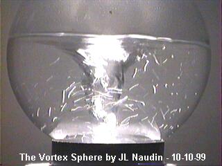
The Vortex Sphere
By Jean-louis Naudin
created on October 10th, 1999 - JLN Labs - Last update October 15th, 1999
The Vortex Sphere device is a very simple experiment for the study of a closed vortex in motion. With this device you will be able to see and study by yourself the path of the fluid flow while the vortex is active.
For building your Vortex Sphere you need only :
- A glass
sphere,
- A magnetic stirring bar ( commonly used in chemical labs for
magnetic stirrer units ). You may also use a cylindrical magnet
(axialy magnetized, a cow magnet for example) with a small
plastic ring in the center.
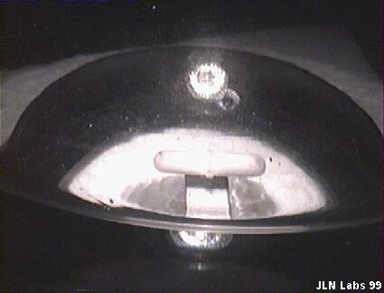 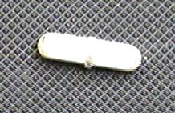
If you don't want to build yourself the stirring unit you can find a complete stirring unit at : www.edsci.com [item ref: #X36-284 (Laboratory magnetic stirrer) ].
If you prefer to build yourself the stirring unit, it is very simple, so you need only to have :
- A DC
motor,
- A strong magnet (Nib magnet is better) axialy magnetised.
The Nib magnet is simply fixed on the motor shaft with a piece of plastic, the magnetic axis must be radial. The DC motor apparatus is mounted in a simple polystyren or plastic box.
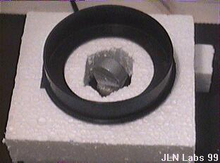
The DC motor must be connected to a variable power supply for adjusting the rotation speed.
Experimental setup
Fill the glass sphere with water, and put the magnetic stirring bar inside it. Place the glass sphere ( now your Vortex Sphere ) above the magnetic stirring unit. And start gently the motor... That's all...
While the motor begin to run, you see the birth of a vortex in the water.
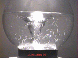
Increase the speed so as you begin to see some cavitation bubbles in the water...
Now, observe the spiral path of the bubbles around the vortex in the water. Try to reverse the rotation and observe the effect on the cavitation bubbles flow around the vortex in the water...You may notice that the vortex is stronger in one direction (CCW) than the other direction (CW) (the Coriolis effect).
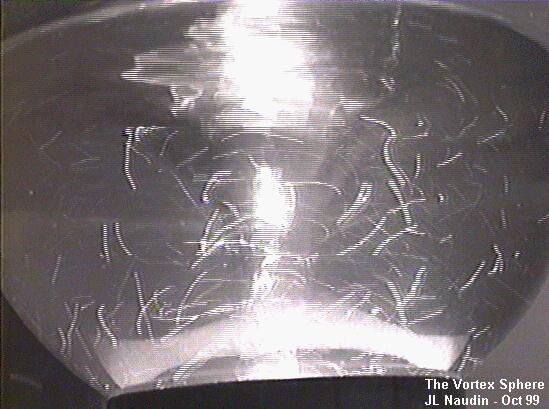
The cavitation bubbles climbs along a spiral path around the main downward vortex...
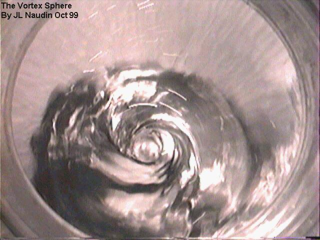
From above the Vortex Sphere, see the vortex spiral ( the Harmonic spiral )...
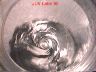
The exact shape of a vortex is an hyperboloid or an hyperbola of rotation. The curve of a vortex is a special hyperbola which is known as a square hyperbola. In the liquid vortex if the vertex is 1, the focus is equal to the square root of 2.
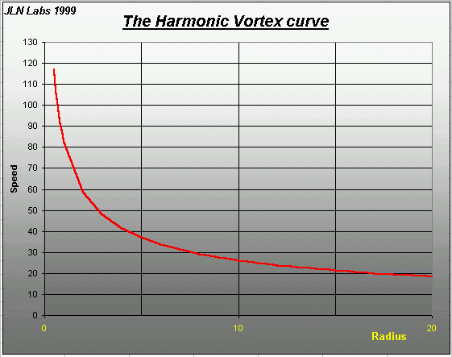
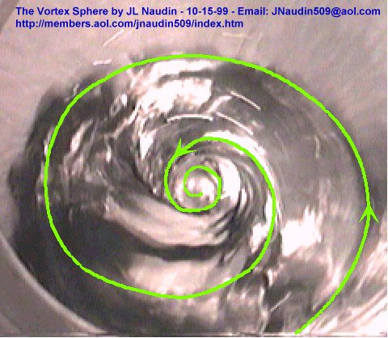
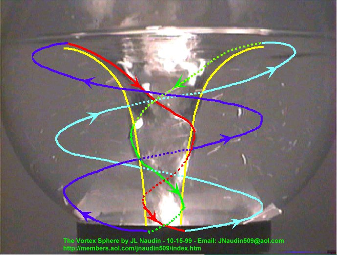
See the video of the Vortex Sphere in action :
RealVideo of the Vortex Shere in action (333kb)
( if you don't have the RealPlayer 5.0, you may download it freely at : http://www.real.com/products/player/ )
See also the :
The Vortex in the bottle experiment.
 Mail to JNaudin509@aol.com
Mail to JNaudin509@aol.com
Return to Vortex Lab home page